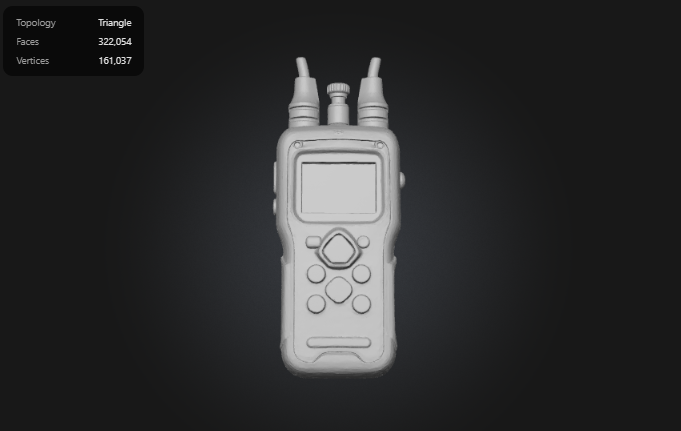
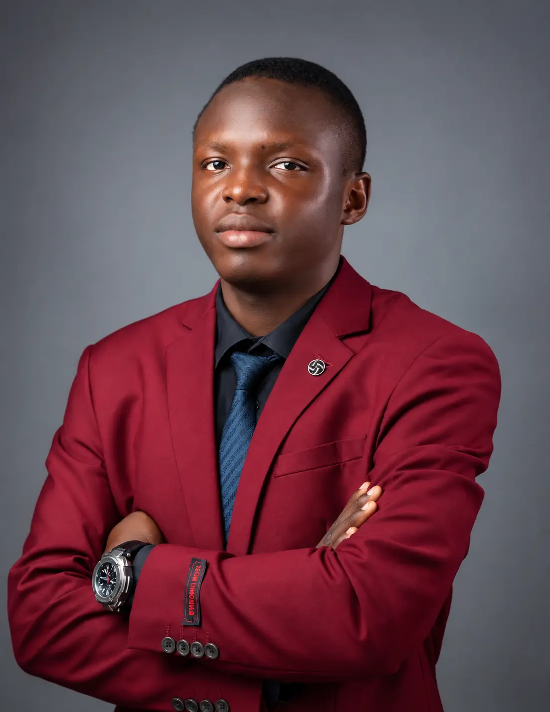
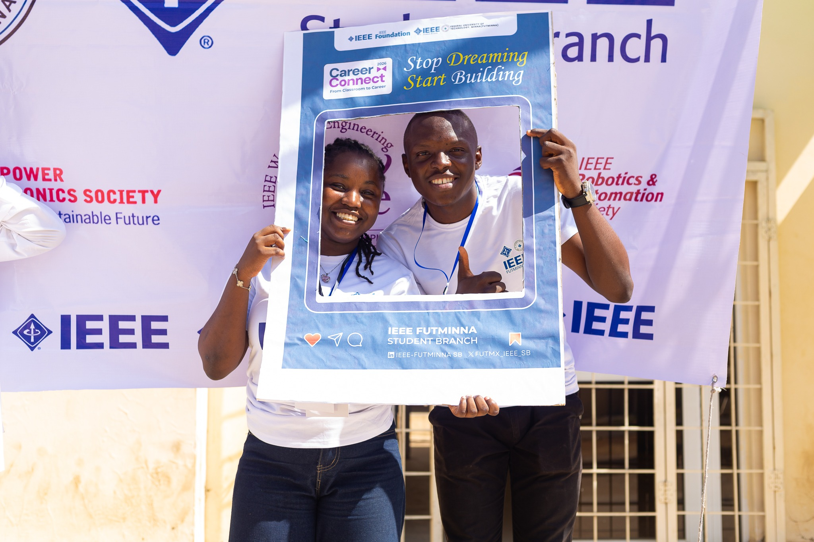
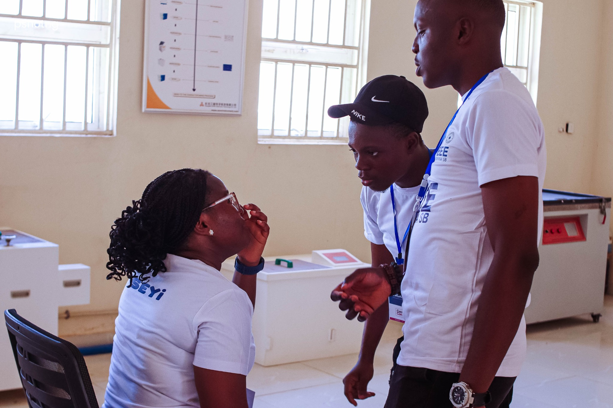
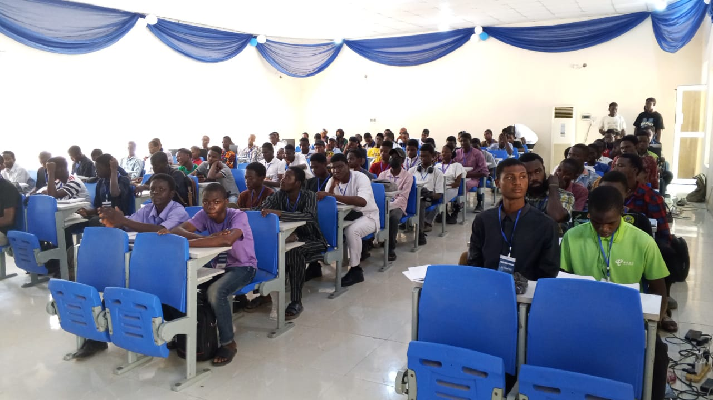

01

ConcreMix Smart Concrete Verification
A portable concept for proactive concrete quality assurance using impedance, ultrasonic and temperature signals.

Ayoola Timilehin IsraelMechatronics Engineer • Intelligent Systems Builder
I build practical solutions across autonomous systems, embedded technology, automation and sustainable energy while creating pathways for African innovators.
Selected work
A focused selection across intelligent sensing, automation, energy resilience and inclusive innovation.

A portable concept for proactive concrete quality assurance using impedance, ultrasonic and temperature signals.
An EPICS in IEEE supported system for resilient primary healthcare power, vaccine refrigeration uptime and rapid SMS alerts.
A multi tier poultry environment monitoring and automation platform with simulated and live telemetry.
Sensor fusion, automatic pump actuation and connected alerts for early fire response.
A QR enabled recycling reward system connecting environmental action with accessible learning.
Experience
Researching 48V DC telecom power, advancing PLC and ESP32 capability, and contributing to an automated broiler cage monitoring platform.
Led a 23 member cohort through six leadership sessions and SDG aligned projects, including a Global Goals Classroom reaching more than 100 students.
Progressed from Opportunity Coordinator to Programme Manager and Programmes Lead, coordinating practical learning and career initiatives for a community of more than 950 members.

Field note • IEEE Career Connect 2026
As part of the organising team, I helped turn a simple idea into a career development experience for more than 200 students, connecting technical learning with decisions, networks and confidence beyond the classroom.


Leadership and impact
I build communities with the same principle I use for systems: clear purpose, strong feedback loops and measurable outcomes.
students reached through engineering, career, SDG and digital skills initiatives.
girls and young women supported through AI education, digital safety and mentorship.
students trained in practical AI through Windows on America programmes.
Selected leadership
Recognition and research
IEEE EMBS • 2026
NICE Innovation Challenge
NIPES
Technology Innovation and Entrepreneurship Competition
Deep Funding
SDSN Niger State
Autonomous systems • Energy systems • Computer vision • Smart materials • Resilient infrastructure • Accessible technology
Living archive
These spaces are ready for future project builds, workshops, media appearances and field moments.
Image coming later
Image coming later
Image coming later
Open channel
I am interested in engineering collaborations, research, speaking, mentorship and community impact partnerships.
timilehinayoola2019@gmail.com ↗